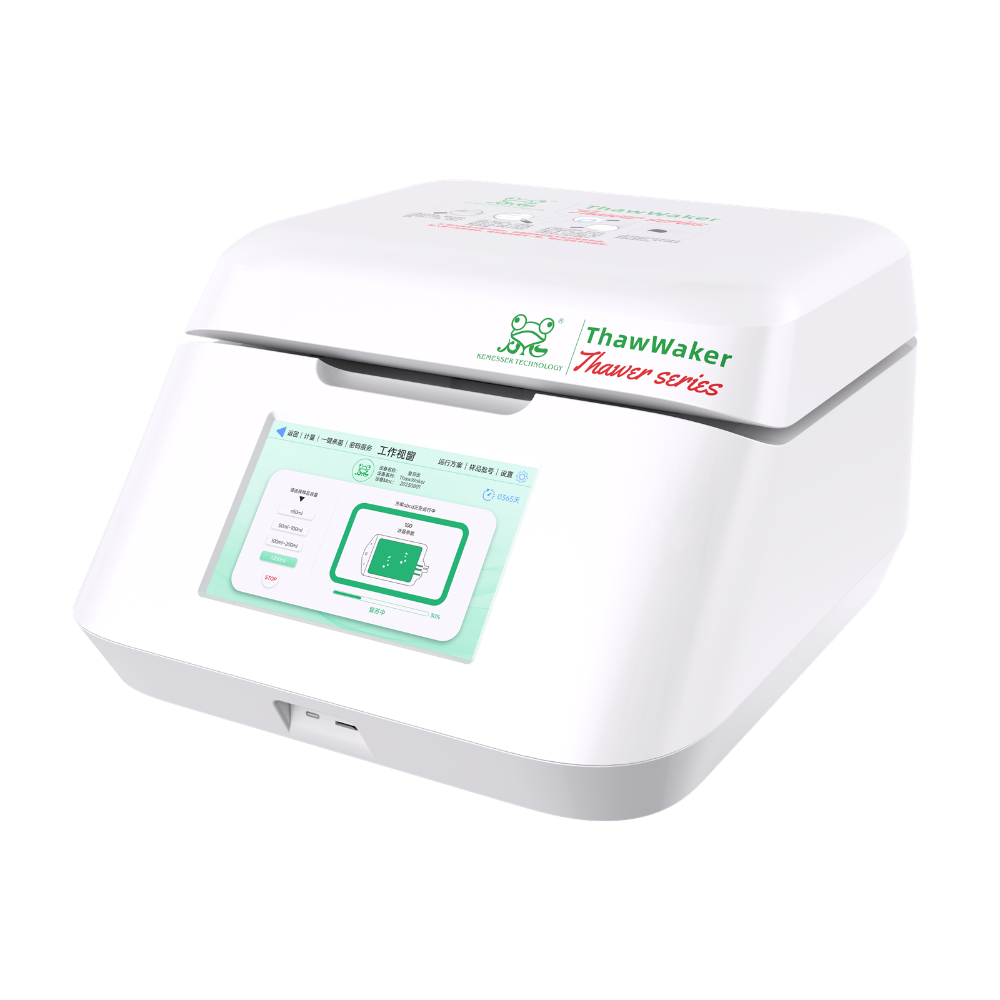

Three-level User Access
Administrator, supervisor and operator roles provide clear authorization boundaries for standardized laboratory management.
BAG THAWING
A bag-format thawing platform combining dynamic multi-probe sensing, adaptive heated-lid contact and comprehensive process management.
Request Product Information
FUNCTIONS
Administrator, supervisor and operator roles provide clear authorization boundaries for standardized laboratory management.
Configurable password validity periods support account security and role-based access management.
Save preheating temperature, protection temperature and residual ice settings as run profiles. Profiles can be named, deleted and activated with one touch, avoiding repeated setup.
Residual ice settings can be adjusted according to sample volume and cryopreservation medium type. The recommended residual ice level at the end of thawing is 5-15%.
Connect to a compatible Bluetooth printer to print thawing time, temperature and sample batch IDs in real time for record retention and traceability.
Ozone disinfection targets bacteria and viruses to help reduce contamination risk.
Bluetooth printing provides paper records of thawing time, temperature and sample batch IDs for record retention and traceability.
The STOP control on the operating screen lets the operator interrupt thawing when an abnormal condition occurs.
The telescopic heated lid accommodates samples of different capacities and shapes, while four-direction air convection improves temperature uniformity.
Users can adjust residual ice settings according to sample volume and cryopreservation medium type. The recommended residual ice level at the end of thawing is 5-15%.
The telescopic heated lid accommodates samples of different capacities and shapes. Four-direction air convection supports more uniform temperatures.
Real-time temperature-rise data makes process progress visible and easier to review.
Temperature calibration supports stable temperature performance and repeatable experimental results.
Set the protection temperature from -40 to 0°C. Thawing will not start if the sample temperature exceeds the set value. This is a startup-protection setting, not a specification for refrigerated sample storage or continuous subzero temperature holding.
Assign a separate batch ID to each sample for identification, tracking and record management.